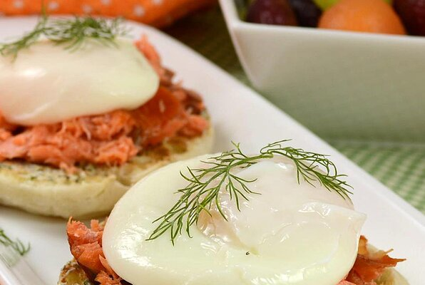

Smoked Salmon Benedict

Brunch is served!
An easy take on the classic smoked salmon breakfast. Learn to poach eggs and impress your friends!
Ingredients
- 1/4 cup butter, soft
- 4 fresh dill sprigs
- 1 teaspoon lemon zest
- 1 pinch cayenne pepper
- salt and ground black pepper
- 1 teaspoon white vinegar
- 1 pinch salt
- 4 eggs
- 2 English muffins
- 4 ounces sliced smoked salmon
Steps
- In a small bowl, stir softened butter, dill, lemon zest, cayenne pepper, salt and black pepper
- Fill large saucepan with 3 inches of water and boil over high heat
- Reduce saucepan heat to medium-low and add vinegar and pinch of salt
- Crack one egg into a bowl and slip into the water of the saucepan
- Carefully crack and add the rest of the eggs
- Poach the eggs in the water until whites are firm and yolks have thickened but are not hard. Note this take about 4-6 minutes once eggs are in water
- Remove eggs from water with slotted spoon
- Let dry on kitchen towel to remove remaining water
- Put eggs on a warm plate
- Cut English muffins and spread with dill butter mixture
- Add smoked salmon on top of muffin
- Add one poached egg
- Season with salt and pepper
- Garnish the top with dill sprig